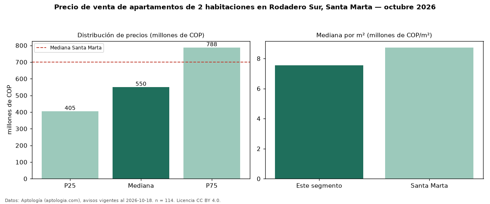

Precio de venta de apartamentos de 2 habitaciones en Rodadero Sur, Santa Marta — octubre 2026
Con 114 avisos vigentes, el precio mediano de apartamentos de 2 habitaciones en venta en Rodadero Sur, Santa Marta es COP 550 millones. Eso es 21 % por debajo de la mediana de Santa Marta para apartamentos de 2 habitaciones (COP 700 millones). Por metro cuadrado, la mediana es COP 7,54 millones/m² (n = 113 avisos con área), 14 % por debajo de Santa Marta (COP 8,73 millones/m²). Son 45 % de los 255 avisos de apartamentos en venta de la zona, cuya mediana general es COP 600 millones (−8 %). El área mediana anunciada es 70 m². La administración mediana declarada es COP 480.000 al mes (n = 98). La mitad central de los avisos va de COP 405 millones a COP 788 millones (razón 1,9), una dispersión moderada. El estrato más frecuente es 6 (46 % de los avisos con estrato). Datos: Aptología (aptologia.com), CC BY 4.0 — https://www.aptologia.com/venta/santa-marta/rodadero-sur. Archivos: PDF, CSV con las cifras y gráfica PNG.

| Avisos únicos | 114 |
|---|---|
| Percentil 25 | COP 405.000.000 |
| Mediana | COP 550.000.000 |
| Percentil 75 | COP 787.500.000 |
| Mediana por m² | COP 7.543.859 |
Fuente: avisos vigentes de portales inmobiliarios recopilados por Aptología, deduplicados (mínimo 30 avisos únicos por celda). Precios pedidos, no cerrados. Fecha: 2026-10-18.